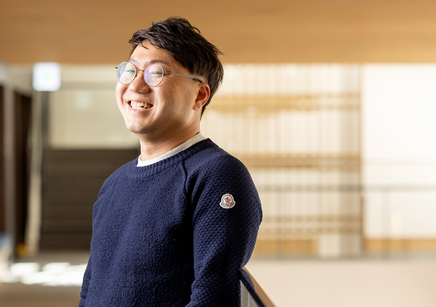
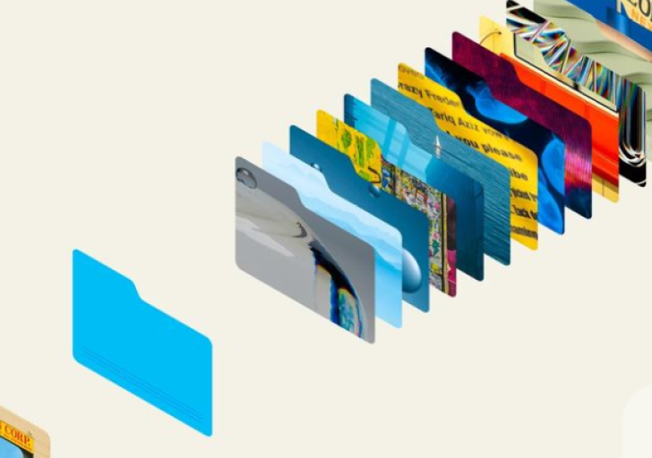
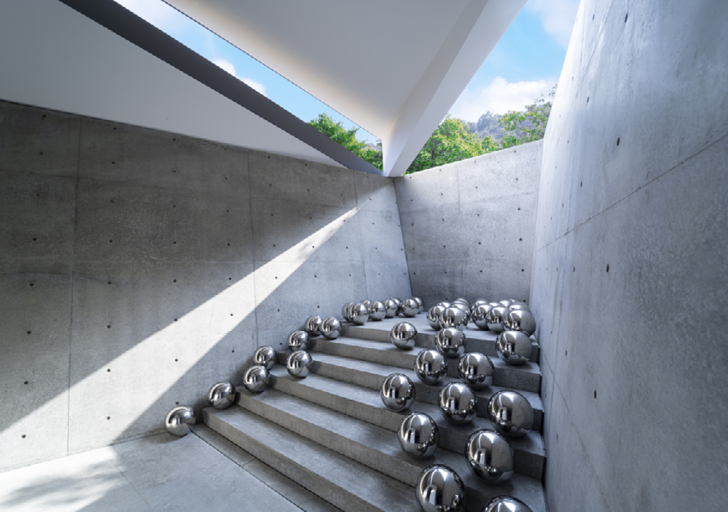
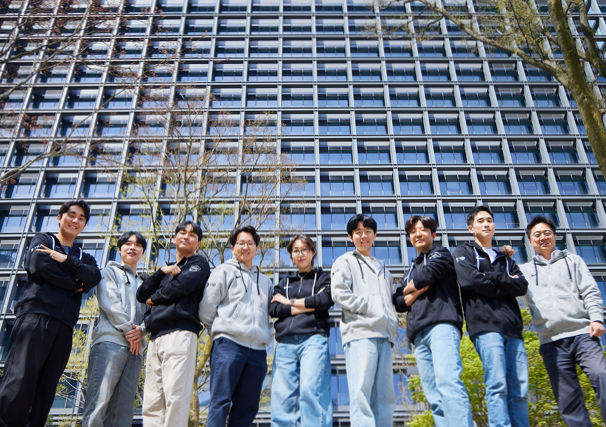
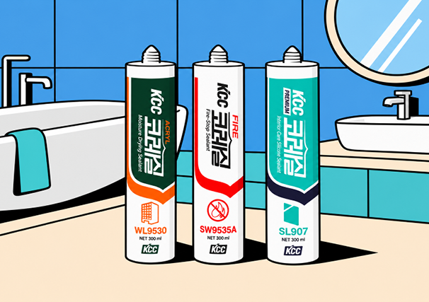
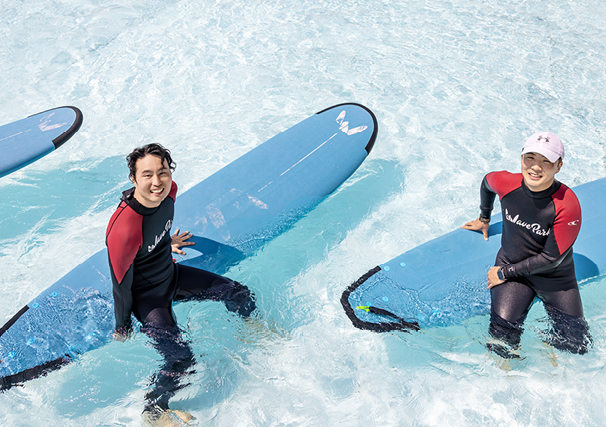
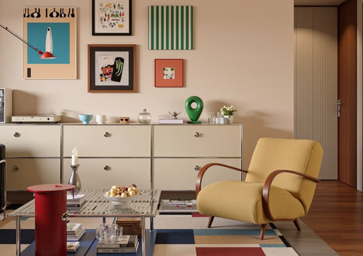
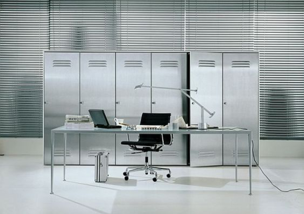
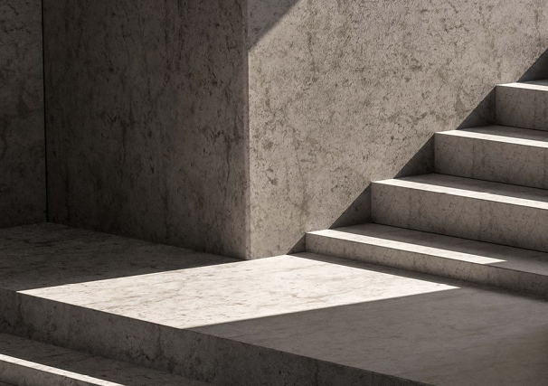
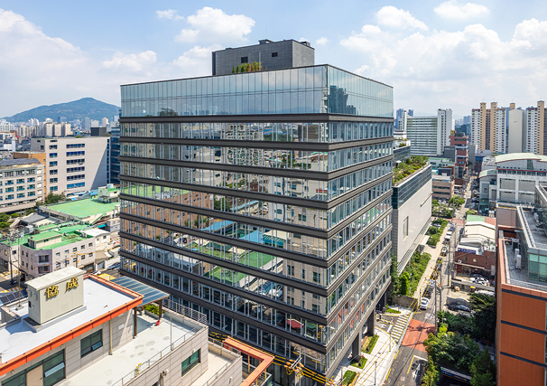

 취향을 일로 만든 사람의 특별한 루틴 좋아하는 일을 오래 이어가는 사람에게는 자신만의 기준과 루틴이 있습니다. 일상의 작은 습관에서 취향을 전문성으로 쌓아가는 KCC인의 이야기를 만나봅니다. 자세히 보기 KCC MASTER
 일 잘하는 사람들의 AI 도구 활용법 반복되는 일은 가볍게, 중요한 판단은 더 깊게. 업무의 흐름을 바꾸는 AI 활용법과 직접 써보며 발견한 노하우를 통해 나에게 맞는 일하는 방식을 찾아봅니다. 자세히 보기 AI X파일
 AI 시대를 사는 휴먼, 한 끗의 차이를 만든다! 같은 공간과 결과물에서도 새로운 가능성을 발견하는 눈. 경험과 관찰이 쌓여 만들어지는 안목을 따라, AI 시대에도 빛나는 인간의 판단력과 한 끗의 차이를 들여다봅니다. 자세히 보기 1%의 힘
손톱만 한 케비가 잠입했다 손톱만 한 케비의 눈으로 KCC 생산 현장을 구석구석 살펴봅니다. 익숙한 제품이 완성되기까지 숨어 있는 공정과 기술, 현장을 움직이는 사람들의 이야기를 만나봅니다. 자세히 보기 케비의 은밀한 출장
 숫자 속에서 답을 찾고, 방향을 설계하다 서로 다른 경험과 전문성이 만나 하나의 팀을 이룹니다. 숫자 너머의 흐름을 읽고 더 나은 방향을 함께 고민하는 경영분석팀의 일과 팀워크, 그들만의 이야기를 소개합니다. 자세히 보기 팀캐를 찾아라!
 알고 쓰면 더 놀라운 KCC 실리콘의 세계 욕실의 작은 틈부터 생활 속 다양한 공간까지, 알고 보면 가까이에 있는 KCC 실리콘. 익숙해서 지나쳤던 제품의 쓰임과 숨은 기술을 쉽고 재미있는 이야기로 풀어봅니다. 자세히 보기 아묻따 KCC
 일하기 좋은 회사, 함께 만드는 새로운 활력 잠시 일상에서 벗어나 함께 웃고 새로운 경험을 나누는 시간. 구성원의 목소리에서 시작해 더 즐거운 일터로 이어지는 우리회사 F5 위원회의 소통과 활력 이야기를 만나봅니다. 자세히 보기 우리회사 F5 위원회
 좁고 오래된 집, 나답게 바꾸는 방법 집 전체를 바꾸지 않아도 일상의 분위기는 달라질 수 있습니다. 크리에이터의 감각과 KCC의 제품·컬러 노하우로 우리 집의 고민을 풀고, 나에게 맞는 공간의 해답을 찾아봅니다. 자세히 보기 ROOM SOS
 같은 공간, 서로 다른 취향의 선택 깔끔한 정리와 자유로운 배치, 익숙한 편안함과 새로운 자극. 같은 공간을 바라보는 서로 다른 취향을 비교하며, 내가 일하고 쉬는 방식에 어울리는 선택을 함께 고민해봅니다. 자세히 보기 VS 추구미
 빛과 색, 재료가 만드는 공간의 표정 거친 콘크리트의 질감부터 계단 위에 내려앉은 빛과 그림자까지. 공간을 채우는 재료와 색의 이야기를 따라, 익숙한 풍경 속에 숨은 감각과 새로운 가치를 발견해봅니다. 자세히 보기 재료의 인문학
 사람과 공간 사이, 더 나은 일상을 잇다 도시의 풍경을 이루는 건물에는 사람과 공간을 이어주는 기술이 숨어 있습니다. 안과 밖, 일과 쉼의 경계에서 더 편안하고 풍요로운 일상을 만드는 연결의 이야기를 만나봅니다. 자세히 보기 사이의 기술